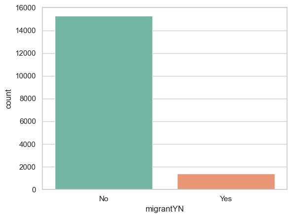
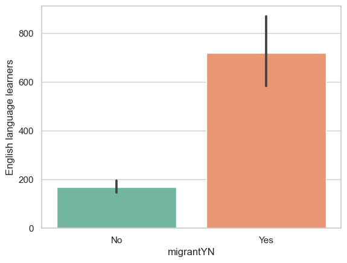
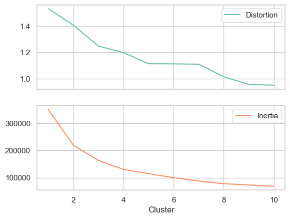
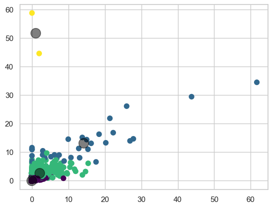
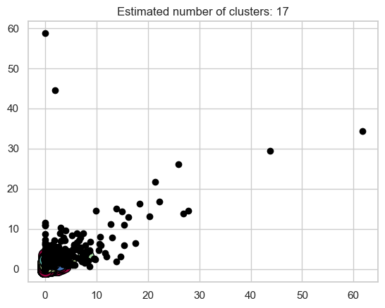
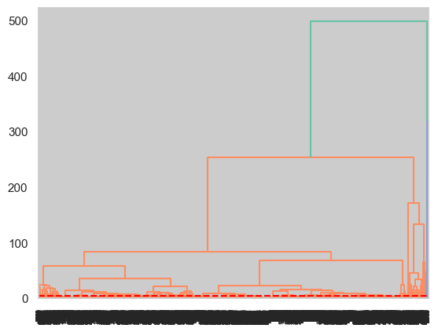
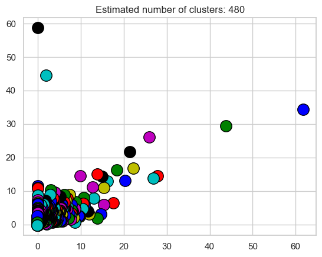

# References:
# scikit-learn documentation
# shared code from class# ## Name: Katie Mead
# ## Date: 11-10-2022
# ## Class Section: 4
# ## Lab Section: 5Import libraries and load the dataset
Make sure to drop the row-id column
import pandas as pd
import numpy as np
import matplotlib.pyplot as plt
import seaborn as sns
import scipy.cluster.hierarchy as sch
import sklearn.cluster as cluster
sns.set_theme(style="whitegrid", palette='Set2')df = pd.read_csv("/Users/katherinemead/Documents/GitHub/anly-501-project-kam515/501-project-website/codes/05-decision-trees/Migrant_Dataset.csv")
df.head()| English language learners | Enrollment | Guidance counselors | instructional_aides_fte | lea_admin_support_staff_fte | lea_administrators_fte | librarian_specialists_fte | librarian_support_staff_fte | number_of_schools | other_staff_fte | ... | support_staff_other_fte | support_staff_stu_wo_psych_fte | support_staff_students_fte | teachers_elementary_fte | teachers_kindergarten_fte | teachers_prek_fte | teachers_secondary_fte | teachers_total_fte | teachers_ungraded_fte | migrantYN | |
|---|---|---|---|---|---|---|---|---|---|---|---|---|---|---|---|---|---|---|---|---|---|
| 0 | -1 | 71 | -1 | -1 | -1 | -1 | -1 | -1 | 7 | 0 | ... | -1 | 0 | -1 | -1 | -1 | -1 | -1 | -1 | -2 | No |
| 1 | 770 | 3790 | 8 | -1 | -1 | 2 | 7 | 3 | 5 | 0 | ... | 134 | 0 | 10 | 111 | 24 | 1 | 89 | 225 | -2 | No |
| 2 | 436 | 5647 | 15 | -1 | -1 | 2 | 13 | 4 | 15 | 0 | ... | 294 | 0 | 17 | 180 | 38 | 5 | 167 | 390 | -2 | No |
| 3 | 758 | 12479 | 32 | -1 | -1 | 2 | 17 | 17 | 16 | 0 | ... | 744 | 0 | 45 | 447 | 101 | 9 | 457 | 1015 | -2 | No |
| 4 | 368 | 8298 | 17 | -1 | -1 | 1 | 11 | 9 | 10 | 0 | ... | 331 | 0 | 34 | 209 | 45 | 4 | 223 | 481 | -2 | No |
5 rows × 27 columns
# change all negative numbers to nan
df = df.replace(-1, np.nan)
df = df.replace(-2, np.nan)
df.head()| English language learners | Enrollment | Guidance counselors | instructional_aides_fte | lea_admin_support_staff_fte | lea_administrators_fte | librarian_specialists_fte | librarian_support_staff_fte | number_of_schools | other_staff_fte | ... | support_staff_other_fte | support_staff_stu_wo_psych_fte | support_staff_students_fte | teachers_elementary_fte | teachers_kindergarten_fte | teachers_prek_fte | teachers_secondary_fte | teachers_total_fte | teachers_ungraded_fte | migrantYN | |
|---|---|---|---|---|---|---|---|---|---|---|---|---|---|---|---|---|---|---|---|---|---|
| 0 | NaN | 71.0 | NaN | NaN | NaN | NaN | NaN | NaN | 7.0 | 0 | ... | NaN | 0 | NaN | NaN | NaN | NaN | NaN | NaN | NaN | No |
| 1 | 770.0 | 3790.0 | 8.0 | NaN | NaN | 2.0 | 7.0 | 3.0 | 5.0 | 0 | ... | 134.0 | 0 | 10.0 | 111.0 | 24.0 | 1.0 | 89.0 | 225.0 | NaN | No |
| 2 | 436.0 | 5647.0 | 15.0 | NaN | NaN | 2.0 | 13.0 | 4.0 | 15.0 | 0 | ... | 294.0 | 0 | 17.0 | 180.0 | 38.0 | 5.0 | 167.0 | 390.0 | NaN | No |
| 3 | 758.0 | 12479.0 | 32.0 | NaN | NaN | 2.0 | 17.0 | 17.0 | 16.0 | 0 | ... | 744.0 | 0 | 45.0 | 447.0 | 101.0 | 9.0 | 457.0 | 1015.0 | NaN | No |
| 4 | 368.0 | 8298.0 | 17.0 | NaN | NaN | 1.0 | 11.0 | 9.0 | 10.0 | 0 | ... | 331.0 | 0 | 34.0 | 209.0 | 45.0 | 4.0 | 223.0 | 481.0 | NaN | No |
5 rows × 27 columns
Exploratory Data Analysis
As we have seen in past labs, we typically want to get inside and explore the data a bit before doing analysis.
#Check the number of rows and columns in the dataset
print(df.shape)(18074, 27)## Get the data types of the columns
print(df.info())<class 'pandas.core.frame.DataFrame'>
RangeIndex: 18074 entries, 0 to 18073
Data columns (total 27 columns):
# Column Non-Null Count Dtype
--- ------ -------------- -----
0 English language learners 12643 non-null float64
1 Enrollment 16676 non-null float64
2 Guidance counselors 14801 non-null float64
3 instructional_aides_fte 14772 non-null float64
4 lea_admin_support_staff_fte 13640 non-null float64
5 lea_administrators_fte 15658 non-null float64
6 librarian_specialists_fte 14132 non-null float64
7 librarian_support_staff_fte 11229 non-null float64
8 number_of_schools 17834 non-null float64
9 other_staff_fte 18074 non-null int64
10 school_admin_support_staff_fte 14475 non-null float64
11 school_administrators_fte 15759 non-null float64
12 school_counselors_fte 18074 non-null int64
13 school_psychologists_fte 18074 non-null int64
14 school_staff_total_fte 18074 non-null int64
15 spec_ed_students 13754 non-null float64
16 supervisory_union_number 17834 non-null float64
17 support_staff_other_fte 14684 non-null float64
18 support_staff_stu_wo_psych_fte 18074 non-null int64
19 support_staff_students_fte 14654 non-null float64
20 teachers_elementary_fte 15897 non-null float64
21 teachers_kindergarten_fte 14428 non-null float64
22 teachers_prek_fte 11919 non-null float64
23 teachers_secondary_fte 15539 non-null float64
24 teachers_total_fte 16422 non-null float64
25 teachers_ungraded_fte 9622 non-null float64
26 migrantYN 18074 non-null object
dtypes: float64(21), int64(5), object(1)
memory usage: 3.7+ MB
NoneCheck for missing values
print(df.isnull().sum(axis=0))English language learners 5431
Enrollment 1398
Guidance counselors 3273
instructional_aides_fte 3302
lea_admin_support_staff_fte 4434
lea_administrators_fte 2416
librarian_specialists_fte 3942
librarian_support_staff_fte 6845
number_of_schools 240
other_staff_fte 0
school_admin_support_staff_fte 3599
school_administrators_fte 2315
school_counselors_fte 0
school_psychologists_fte 0
school_staff_total_fte 0
spec_ed_students 4320
supervisory_union_number 240
support_staff_other_fte 3390
support_staff_stu_wo_psych_fte 0
support_staff_students_fte 3420
teachers_elementary_fte 2177
teachers_kindergarten_fte 3646
teachers_prek_fte 6155
teachers_secondary_fte 2535
teachers_total_fte 1652
teachers_ungraded_fte 8452
migrantYN 0
dtype: int64# drop rows with missing enrollment
df = df.dropna(subset=['Enrollment'])
print(df.shape)(16676, 27)Let’s check unique values for categorical columns.
Common options for handling unusual data include;
replace un-expected values it with the most frequent value (for categorical columns), and with the mean value (for numerical columns)
delete the row with missing or unusual values
There are a lot of missing values in sex column, make a conscious decision on how to handle them.
Write two+ lines on what procedure and logic you used to make that decision.
For example, you can write, “I chose to replace values for Adelie penguins on Torgersen island to be all male (or x% male and (1-x)% female)… I chose this procedure because number of penguins male penguins were underrepresented (a usual ratio is for mammels is around 55% female and 45% males)”replace the missing values with the most frequent value in the column.
print(df['migrantYN'].unique()) # print islands of penguins['No' 'Yes']# plot the number of penguins in each island
sns.countplot(x='migrantYN', data=df)
plt.show()
# get average English language learners for migrant==Yes and migrant==No
print(df.groupby('migrantYN')['English language learners'].mean())
# plot the average English language learners for migrant==Yes and migrant==No
sns.barplot(x='migrantYN', y='English language learners', data=df)migrantYN
No 169.287617
Yes 718.444717
Name: English language learners, dtype: float64<AxesSubplot:xlabel='migrantYN', ylabel='English language learners'>
# filling all missing values with the mean of the column
columns_list = []
for i in df.columns[:-1]:
columns_list.append(i)
for i in columns_list:
df[i] = df[i].fillna(value = df[i].mean())
df.isna().sum() # check that there are no more missing valuesEnglish language learners 0
Enrollment 0
Guidance counselors 0
instructional_aides_fte 0
lea_admin_support_staff_fte 0
lea_administrators_fte 0
librarian_specialists_fte 0
librarian_support_staff_fte 0
number_of_schools 0
other_staff_fte 0
school_admin_support_staff_fte 0
school_administrators_fte 0
school_counselors_fte 0
school_psychologists_fte 0
school_staff_total_fte 0
spec_ed_students 0
supervisory_union_number 0
support_staff_other_fte 0
support_staff_stu_wo_psych_fte 0
support_staff_students_fte 0
teachers_elementary_fte 0
teachers_kindergarten_fte 0
teachers_prek_fte 0
teachers_secondary_fte 0
teachers_total_fte 0
teachers_ungraded_fte 0
migrantYN 0
dtype: int64# get the length of every column
for i in df.columns:
print(i, len(df[i]))English language learners 16676
Enrollment 16676
Guidance counselors 16676
instructional_aides_fte 16676
lea_admin_support_staff_fte 16676
lea_administrators_fte 16676
librarian_specialists_fte 16676
librarian_support_staff_fte 16676
number_of_schools 16676
other_staff_fte 16676
school_admin_support_staff_fte 16676
school_administrators_fte 16676
school_counselors_fte 16676
school_psychologists_fte 16676
school_staff_total_fte 16676
spec_ed_students 16676
supervisory_union_number 16676
support_staff_other_fte 16676
support_staff_stu_wo_psych_fte 16676
support_staff_students_fte 16676
teachers_elementary_fte 16676
teachers_kindergarten_fte 16676
teachers_prek_fte 16676
teachers_secondary_fte 16676
teachers_total_fte 16676
teachers_ungraded_fte 16676
migrantYN 16676Seperate the dataset into features and labels
from sklearn.model_selection import train_test_split # import train_test_split function
from sklearn.preprocessing import StandardScaler # import StandardScaler
# Split dataset into features (x) and target variable (y)
X = df.drop(['migrantYN'], axis=1) # X is all the columns except species
y = df['migrantYN'] # y is the species column
scalar = StandardScaler() # create a scaler object
scalar.fit(X) # fit the scaler to the features
X = scalar.transform(X)
#X_train, X_test, y_train, y_test = train_test_split(X, y, test_size=0.2, random_state=42)Perform K-means
from statistics import mode
import numpy as np
import pandas as pd
import matplotlib.pyplot as plt
from sklearn.cluster import KMeans
from scipy.spatial.distance import cdist
from sklearn.metrics import classification_report, confusion_matrix, ConfusionMatrixDisplay,accuracy_score
from threadpoolctl import threadpool_limitsdistortions = []
inertias = []
k = 11
for k in range(1,k):
kmeanModel = KMeans(n_clusters=k,init = 'k-means++', random_state = 42)
kmeanModel.fit(X)
distortions.append(sum(np.min(cdist(X, kmeanModel.cluster_centers_, 'euclidean'),axis=1)) / X.shape[0])
inertias.append(kmeanModel.inertia_)
evaluation = pd.DataFrame.from_records({'Cluster':np.arange(1,k+1), 'Distortion':distortions, 'Inertia':inertias})
evaluation| Cluster | Distortion | Inertia | |
|---|---|---|---|
| 0 | 1 | 1.531624 | 350196.000000 |
| 1 | 2 | 1.405160 | 219474.382035 |
| 2 | 3 | 1.246938 | 163630.301676 |
| 3 | 4 | 1.197275 | 130396.765683 |
| 4 | 5 | 1.112973 | 115074.079469 |
| 5 | 6 | 1.111899 | 100052.112334 |
| 6 | 7 | 1.109342 | 87897.644313 |
| 7 | 8 | 1.013939 | 77840.256356 |
| 8 | 9 | 0.955510 | 73295.951176 |
| 9 | 10 | 0.949423 | 68666.954725 |
evaluation.plot.line(x = 'Cluster',subplots=True)array([<AxesSubplot:xlabel='Cluster'>, <AxesSubplot:xlabel='Cluster'>],
dtype=object)
# K means with 4 clusters
kmeans = KMeans(n_clusters=4, init = 'k-means++', random_state = 42)
kmeans.fit(X)
y_kmeans = kmeans.predict(X)
# plot the clusters
plt.scatter(X[:, 0], X[:, 1], c=y_kmeans, s=50, cmap='viridis')
centers = kmeans.cluster_centers_
plt.scatter(centers[:, 0], centers[:, 1], c='black', s=200, alpha=0.5);
plt.show()
Perform DBSCAN and predict the labels
import numpy as np
from sklearn.cluster import DBSCAN
from sklearn import metrics
from sklearn.datasets import make_blobs
from sklearn.preprocessing import StandardScalerfrom sklearn.cluster import DBSCAN
db = DBSCAN(eps=2.5, min_samples=2).fit(X)
core_samples_mask = np.zeros_like(db.labels_, dtype=bool)
core_samples_mask[db.core_sample_indices_] = True
labels = db.labels_# Number of clusters in labels, ignoring noise if present.
n_clusters_ = len(set(labels)) - (1 if -1 in labels else 0)
n_noise_ = list(labels).count(-1)
import matplotlib.pyplot as plt
# Black removed and is used for noise instead.
unique_labels = set(labels)
colors = [plt.cm.Spectral(each) for each in np.linspace(0, 1, len(unique_labels))]
for k, col in zip(unique_labels, colors):
if k == -1:
# Black used for noise.
col = [0, 0, 0, 1]
class_member_mask = labels == k
xy = X[class_member_mask & core_samples_mask]
plt.plot(
xy[:, 0],
xy[:, 1],
"o",
markerfacecolor=tuple(col),
markeredgecolor="k",
markersize=14,
)
xy = X[class_member_mask & ~core_samples_mask]
plt.plot(
xy[:, 0],
xy[:, 1],
"o",
markerfacecolor=tuple(col),
markeredgecolor="k",
markersize=6,
)
plt.title("Estimated number of clusters: %d" % n_clusters_)
plt.show()
Agglomerative Clustering (Hierarchical clustering)
from scipy.cluster.hierarchy import dendrogram, linkage
from sklearn.cluster import AgglomerativeClustering
model = AgglomerativeClustering().fit(X)
labels = model.labels_### Plot the clusters for Agglomerative Clustering
Z = linkage(X, method='ward') # method can be single, complete, average, centroid, median, ward
dend = dendrogram(Z)
plt.axhline(y=5, color='r', linestyle='--', label='5')<matplotlib.lines.Line2D at 0x7f99698bfa90>
Mean Shift
from sklearn.cluster import MeanShift, estimate_bandwidth
from itertools import cycle
model = MeanShift(bandwidth=2).fit(X)
labels = model.labels_
cluster_centers = model.cluster_centers_
labels_unique = np.unique(labels)
n_clusters_ = len(labels_unique)
print("number of estimated clusters : %d" % n_clusters_)number of estimated clusters : 480### Plot the clusters for Mean Shift Clustering
import matplotlib.pyplot as plt
from itertools import cycle
plt.figure(1)
plt.clf()
colors = cycle("bgrcmykbgrcmykbgrcmykbgrcmyk")
for k, col in zip(range(n_clusters_), colors):
my_members = labels == k
cluster_center = cluster_centers[k]
plt.plot(X[my_members, 0], X[my_members, 1], col + ".")
plt.plot(
cluster_center[0],
cluster_center[1],
"o",
markerfacecolor=col,
markeredgecolor="k",
markersize=14,
)
plt.title("Estimated number of clusters: %d" % n_clusters_)
plt.show()